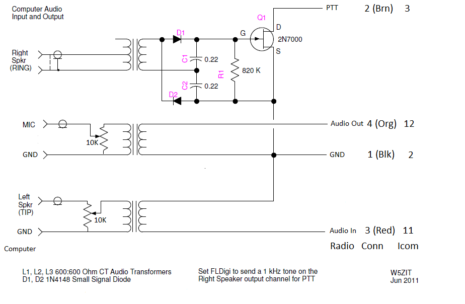
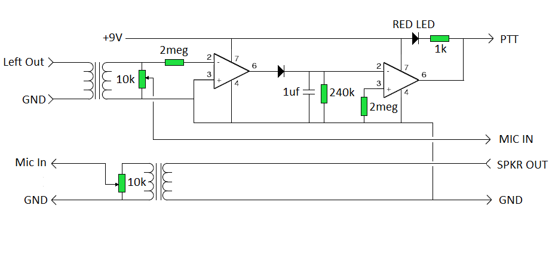

KA9PDK rig to computer
interface
This narrative is about the trials of getting a working home made interface to go between my radio and my computer. While simple in thought, not so simple to create and make work the way I wanted.

I have several radios that I wanted to use and wanted the interface to easily connect, no matter which radio or computer was to be used. To achieve this I decided early on to utilize some S-Video cables I had in the BOX. Ordering a half dozen female jacks from eBay was next to nothing and only had to endure the wait. Then I soldered the end of a cable to the inside of my GE-MVS radio and made jumpers from the back of my Kenwood and Icom radios all with S-Video male plugs. To do is an ugly breakout cable to interface my Kenwood 261 2 Meter radio. It will be an 8 pin RJ45 plug to radio, and a cord to back of radio to pickup audio. In use, there will be no mic or built in speaker, but great for digital.

After searching the internet and building several interfaces, I settled on the schematic that is part of the help page for fldigi. This interface is close to ideal, but it turns out to have its own problems. While most computers have an audio jack labeled MIC for input the audio out has several variations and can be found in my different computers in my own ham shack. After many on air attempts, it was found that the best thing would be if the computer audio adjustments were both set to 100% max values and use external control to adjust as needed. Your higher end boxes available all do this with green and red control along with other controls of unknown nature.
So, my first working control is built as per MyInterface2 schematic and is based on the one in the fldigi help site. I actually built 2 of these with varying degrees of success. In both cases they are inop for use with the provided MARS radio software that I have to use for secure digital operation.


So, I redesigned the interface, made it simpler and built a more robust VOX circuit to detect audio and do the PTT for the radio xmit mode. This version will be my final and it works well with all software that I have tried.

 Both units will be at the next show-n-tell for the February 2016
NEMOARC meeting.
Both units will be at the next show-n-tell for the February 2016
NEMOARC meeting.